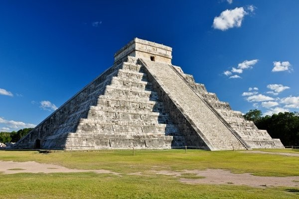

Chichén Itzá est une ancienne ville maya située entre Valladolid et Mérida dans la péninsule du Yucatán au Mexique. Chichén Itzá fut probablement, au xe siècle, le principal centre religieux du Yucatán ; il reste aujourd’hui l’un des sites archéologiques les plus importants et les plus visités de la région. Le site a été classé au patrimoine mondial de l'UNESCO en 1988, et a été élu, le 7 juillet 2007, comme l'une des sept nouvelles merveilles du monde après un vote controversé organisé par la New Seven Wonders Foundation. La présence d'une cité maya à cet endroit est due à la présence d'au moins cinq puits naturels (cénotes) qui constituaient un trésor inestimable dans cette région dépourvue d'eau. Le site doit d'ailleurs son nom à cette source d'eau souterraine : Chi signifie « bouche » et Chén, « puits ». Itzá (« sorcier de l'eau » en maya yucatèque) est le nom du groupe qui, selon les sources ethnohistoriques, constituait la classe dirigeante de la cité. À plus d'un égard Chichen Itzá demeure une énigme : sa chronologie, à cheval sur le Classique terminal et le Postclassique ancien, demeure floue ; l'identité des Itzá est incertaine et, surtout, la nature exacte des liens indéniables entre la cité maya et le Mexique central fait toujours l'objet de débats.